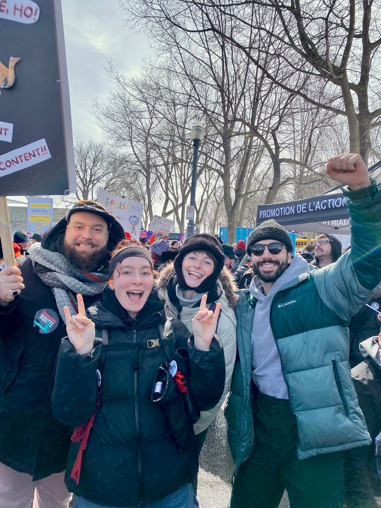
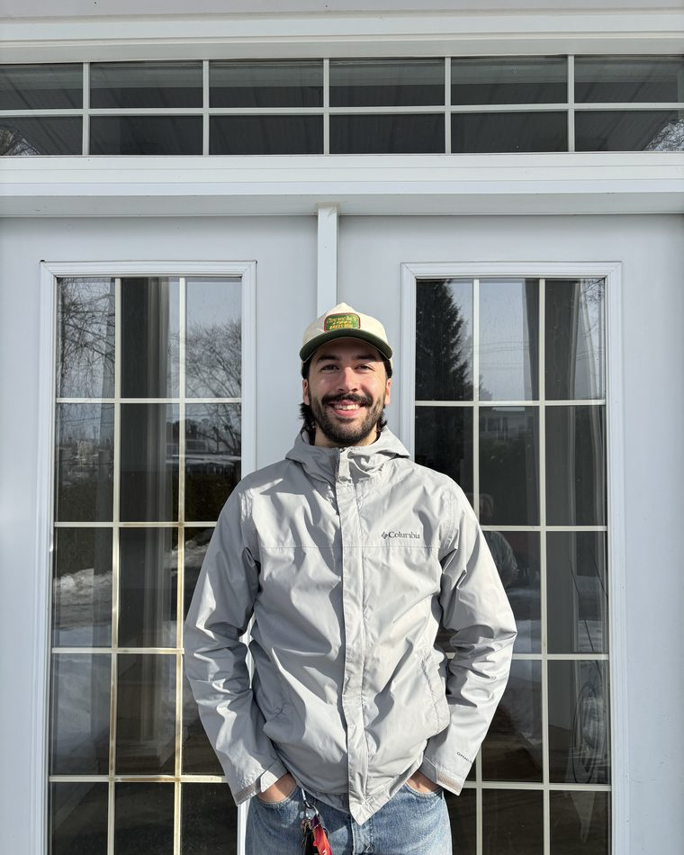
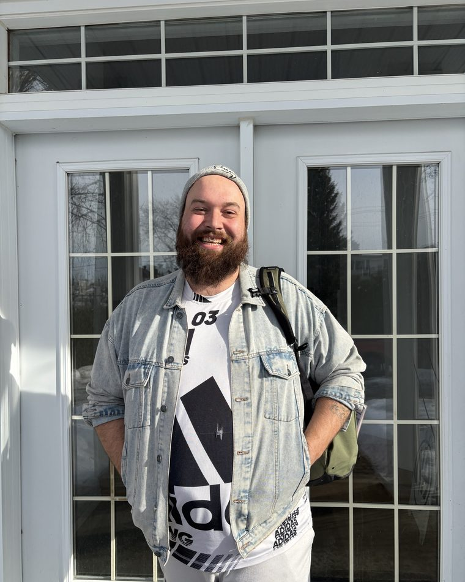

Travail de rue · Territoire de Kateri
On va vers les gens,
là où ils sont.
On rejoint les personnes en situation de précarité dans leur milieu de vie, on bâtit un lien de confiance et on les accompagne vers les bonnes ressources, à leur rythme.
Gratuit
Nos services sont accessibles à tous, sans aucuns frais.
Confidentiel
Ce que vous partagez reste entre vous et nous.
Sans jugement
On vous rencontre là où vous êtes, tel que vous êtes.

Notre mission
Une présence humaine et accessible, dans la rue.
Nous allons à la rencontre des gens dans leur milieu de vie, sans rendez-vous ni condition. On écoute, on accompagne les démarches et on tisse le lien vers les ressources communautaires, institutionnelles et publiques.
- Écoutesans jugement
- Confidentialitéun lien protégé
- Autonomieà votre rythme
- Présence constanteau quotidien
Sept villes,
une communauté.
Impact 2025
Notre première année, en chiffres.
Ce que notre présence sur le terrain a représenté, concrètement.
Le travail de rue, c'est le pont entre la rue et les ressources.Alexandre Laberge, directeur
L'équipe
Des visages, dans le quartier.
Leur bureau, c'est la rue. Chaque intervenant à ses territoires d'observations et se promène avec son sac à dos.

Alexandre LabergeDirecteur Meggan DionneTravailleuse de rue
Meggan DionneTravailleuse de rue
Kevin Gravel-OrchardTravailleur de rue